lorenz_partial_25d_additive_mse_uniform_p30__recon_sweepProject: Lorenz_INDpartial_N25_D1_NormTrue_T3__JacobianODE
Launched: 2026-04-16T16:35:10Z
Completed: 2026-04-16T21:10:15Z
Outcome: complete_with_failures
Git: latent-JacobianODE @ 1bb0d97
Expected runs: 3
lorenz_partial_25d_additive_mse_uniform_p30_recon_sweepDescription
Same base as lorenz_partial_25d_additive_mse_uniform_p30. Fixes
loop_closure_weight=1e-5 (best from the prior LC sweep, run
z4l1eazh). Sweeps training.lightning.reconstruction_loss_weight
over {1, 10, 100} to test whether pushing the dyn-only bottleneck
residual smaller drags
Hypothesis
For z4l1eazh, the full-latent cycle D(E(x))=x held at ~1e-8 but
the dyn-only cycle D([E(x)_dyn, 0]) had ~0.7% RMS residual — so
training data x_de does not lie exactly on the model's 3-D image
manifold M = {D([z_dyn, 0])}.
Success criteria
Swept axes (1): training.lightning.reconstruction_loss_weight
Chosen run (by best_traj_loss): 0efqqxfe — traj_loss=0.00004, MASE=0.1258, R²=0.9999, LC loss=0.164, epoch=197.0
Swept-axis values at chosen run: training.lightning.reconstruction_loss_weight=10
⚠️ Matched-run count mismatch: expected 3 run_idx slots per the sentinel, matched 2 in wandb. The sweep may still be in progress, or some slots failed without producing wandb evidence.
Runs analyzed: 2 (expected 3)
| run_idx | run_id | training.lightning.reconstruction_loss_weight |
best_traj_loss | best_MASE | R² | LC loss | epoch |
|---|---|---|---|---|---|---|---|
| 1 | 0efqqxfe |
10 | 0.00004 | 0.1258 | 0.9999 | 0.164 | 197.0 |
| 0 | ez55lpde |
1 | 0.00005 | 0.1379 | 0.9999 | 0.125 | 197.0 |
| Criterion | Verdict | Note |
|---|---|---|
| dyn-only reconstruction loss monotonically decreases with weight | Unknown | |
| Unknown | ||
| λ₃ at recon_weight=100 is more negative than at recon_weight=1 | Unknown |
Automated verdicts use simple numeric-threshold parsing and may mis-classify qualitative criteria. The Discussion section below takes precedence.
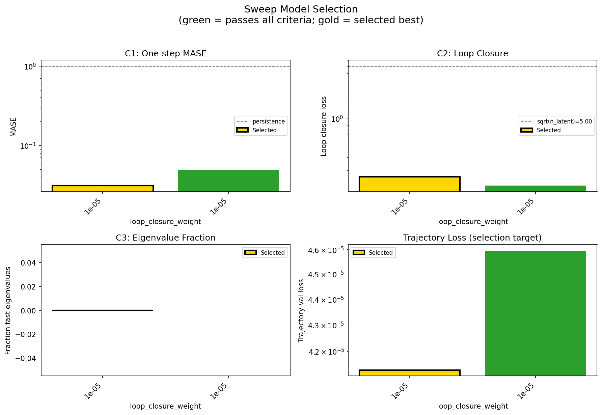
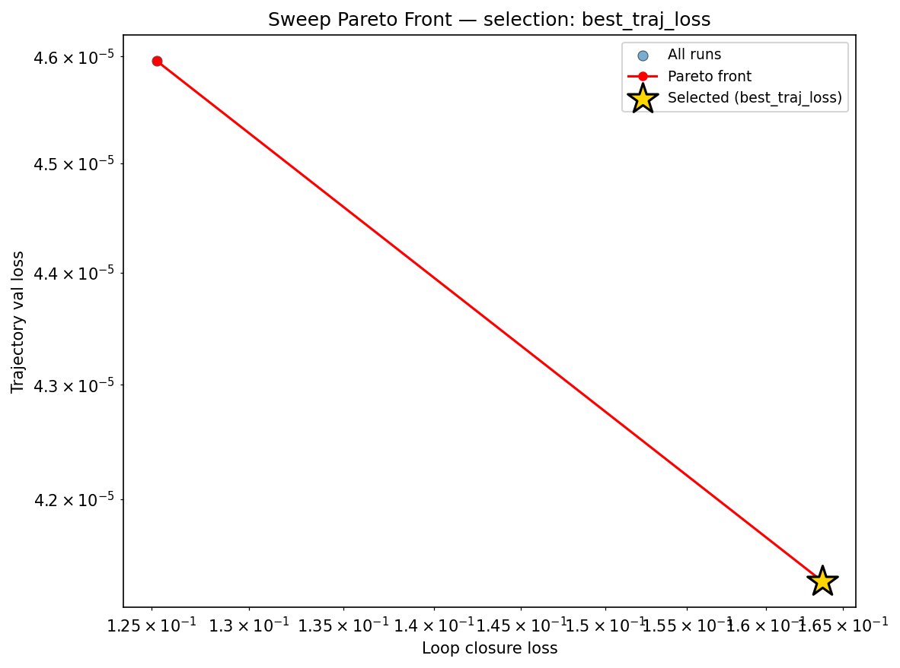
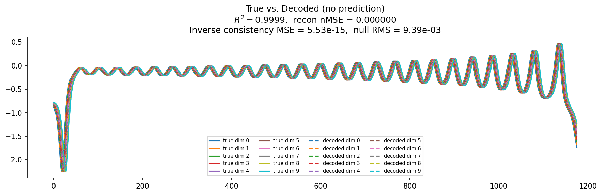
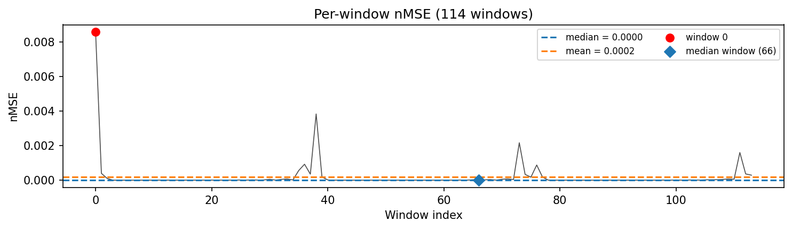
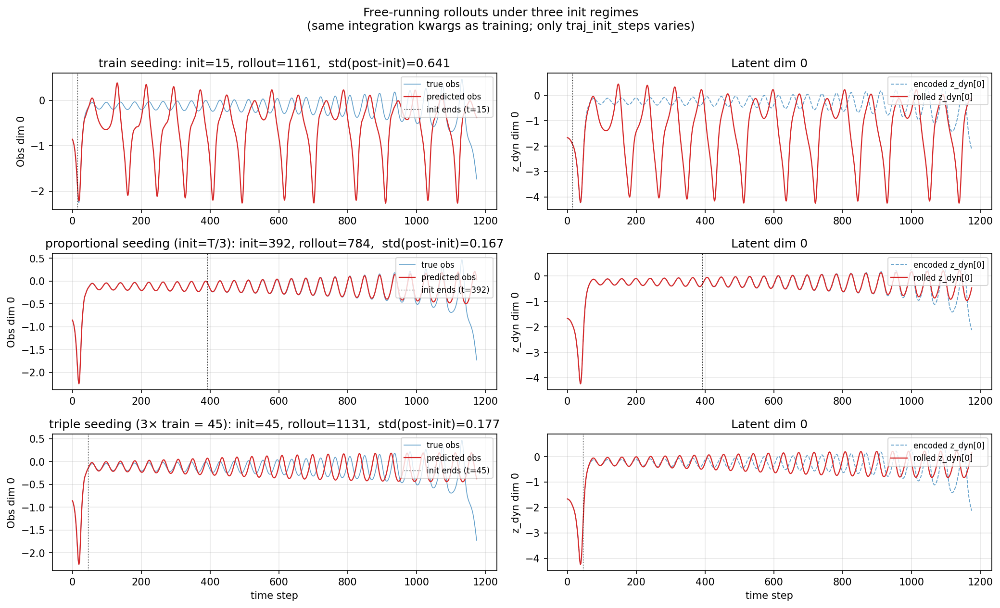
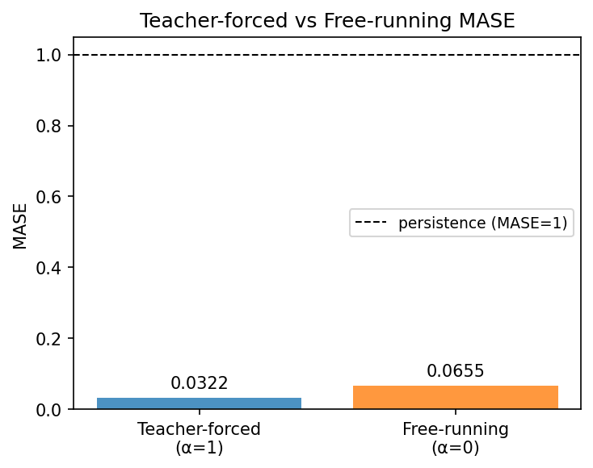
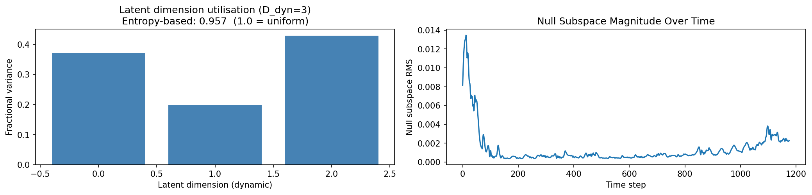
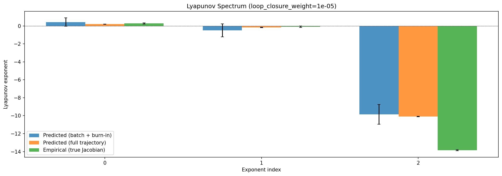
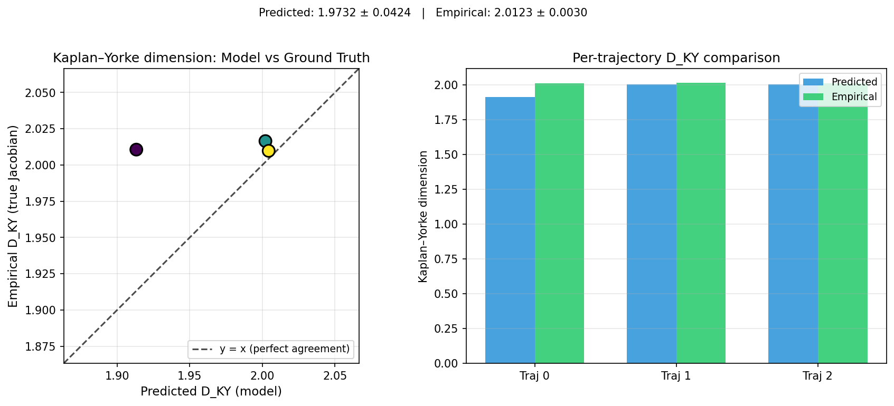
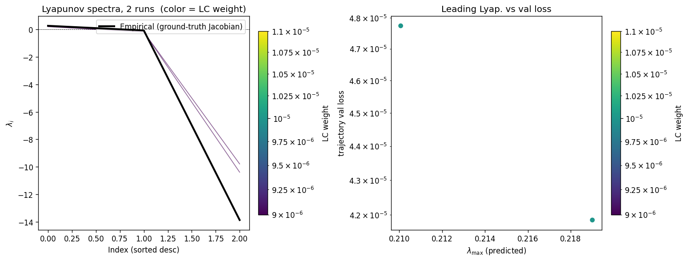
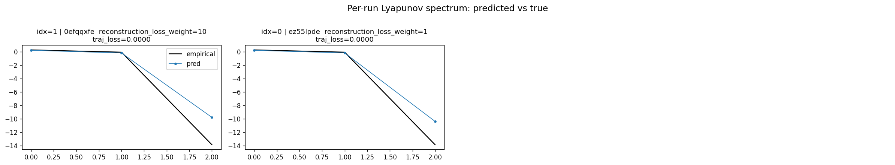
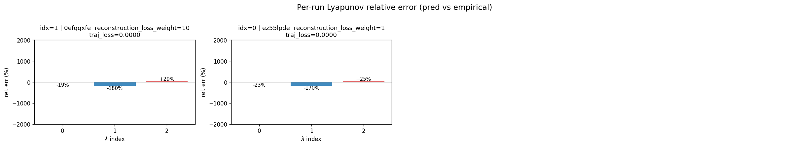
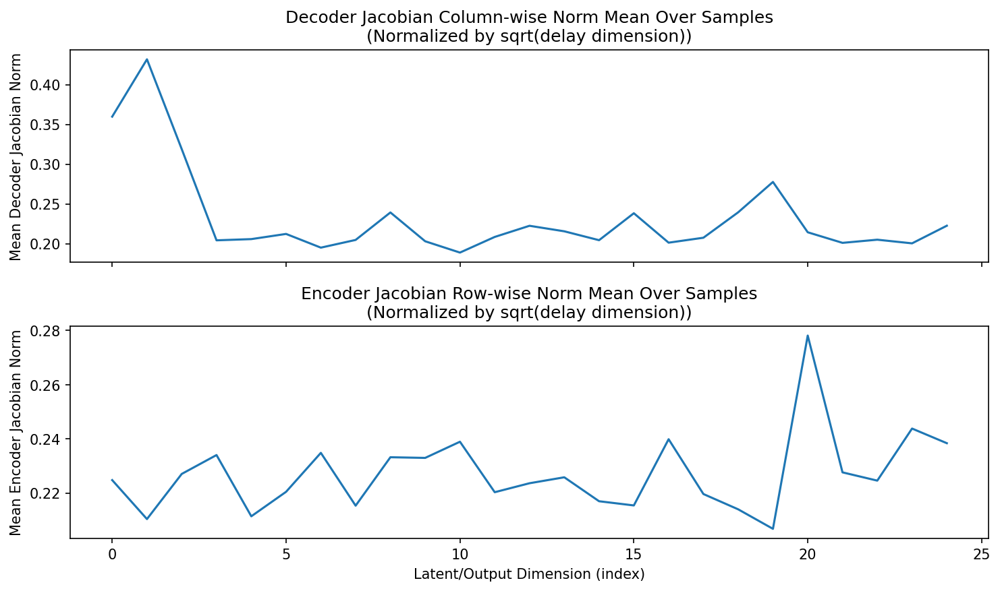
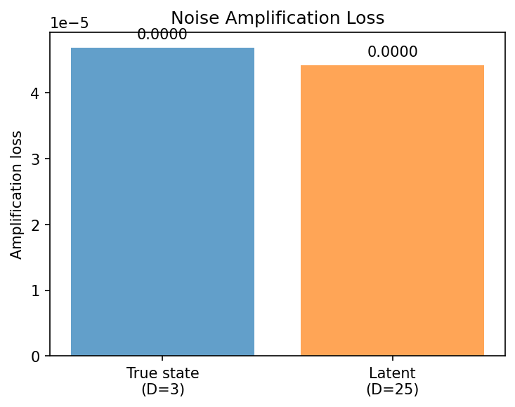
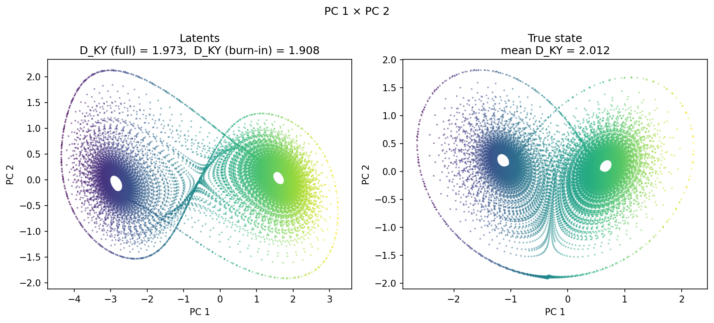
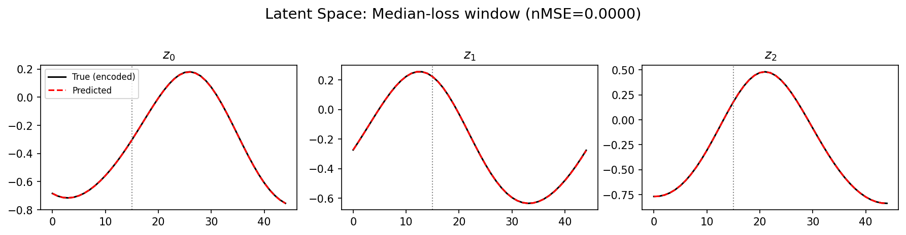
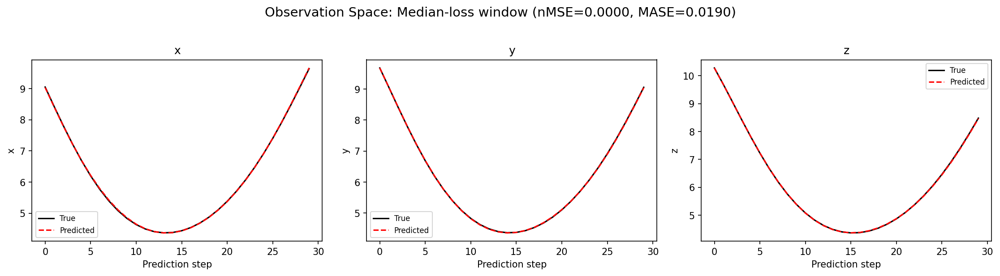
(to be written)
run_analytics stdoutrun_analyticsNo run_id provided — selecting best run from group 'lorenz_partial_25d_additive_mse_uniform_p30__recon_sweep' ...
Found 2 total runs in JacobianODE/Lorenz_INDpartial_N25_D1_NormTrue_T3__JacobianODE (group=lorenz_partial_25d_additive_mse_uniform_p30__recon_sweep)
All runs (state, loop_closure_weight, tangent_entropy_weight, kl_dyn_weight):
0efqqxfe: state=finished, lc=1e-05, te=0.0, kl_dyn=0.0
ez55lpde: state=finished, lc=1e-05, te=0.0, kl_dyn=0.0
slurm_timeout_min not found in any run config — falling back to 180 min
Including 0efqqxfe (lc=1e-05): use_all_runs=True (state=finished)
Including ez55lpde (lc=1e-05): use_all_runs=True (state=finished)
Found 2 effectively-done sweep runs:
loop_closure_weight=1e-05, tangent_entropy_weight=0.0, kl_dyn_weight=0.0 -> run_id=0efqqxfe
loop_closure_weight=1e-05, tangent_entropy_weight=0.0, kl_dyn_weight=0.0 -> run_id=ez55lpde
n_dims=25, n_latent=25, n_dyn=3, dt=0.0150
run=0efqqxfe: DiagnosticMetrics(one_step_mase=0.0311412550508976, loop_closure_loss=0.16365577280521393, fast_eigenvalue_fraction=0.0, trajectory_val_loss=4.1294744733022526e-05) (from cache, n_batches=100)
run=ez55lpde: DiagnosticMetrics(one_step_mase=0.04930305853486061, loop_closure_loss=0.12527205049991608, fast_eigenvalue_fraction=0.0, trajectory_val_loss=4.595398058881983e-05) (from cache, n_batches=100)
Ranking method: best_traj_loss
Best run ID: 0efqqxfe
Best loop_closure_weight: 1e-05
Best tangent_entropy_weight: 0.0
Best kl_dyn_weight: 0.0
Best traj loss: 0.000041
Criteria applied: ['C1', 'C2', 'C3']
Surviving: 2 / 2
Auto-selected run_id: 0efqqxfe
======================================================================
PARETO FRONTIER RUNS (2 runs)
======================================================================
Run ID LC Loss Traj Val Loss
------------ -------------- --------------
ez55lpde 0.125272 0.000046
0efqqxfe 0.163656 0.000041 <-- selected
======================================================================
RANKING METHOD COMPARISON (over 2 survivors)
======================================================================
Method Run ID LC Loss Traj Val Loss
---------------------- ------------ -------------- --------------
best_traj_loss 0efqqxfe 0.163656 0.000041 <-- active
pareto_knee ez55lpde 0.125272 0.000046
geo_rank 0efqqxfe 0.163656 0.000041
minimax_rank 0efqqxfe 0.163656 0.000041
geo_log_score 0efqqxfe 0.163656 0.000041
minimax_log_score ez55lpde 0.125272 0.000046
======================================================================
Loading run 0efqqxfe from JacobianODE/Lorenz_INDpartial_N25_D1_NormTrue_T3__JacobianODE ...
Train dataset shape: torch.Size([24882, 45, 25])
Validation dataset shape: torch.Size([7917, 45, 25])
Test dataset shape: torch.Size([3393, 45, 25])
Train trajectories dataset shape: torch.Size([22, 1176, 25])
Validation trajectories dataset shape: torch.Size([7, 1176, 25])
Test trajectories dataset shape: torch.Size([3, 1176, 25])
Loading checkpoint epoch=197-step=39600.ckpt...
Computing reconstruction ...
Computing MASE ...
Teacher-forced MASE: 0.0322
Free-running MASE: 0.0655
Computing latent utilization ...
Entropy-based utilization: 0.957
Null subspace mean RMS: 2.304416e-03
Computing Lyapunov exponents ...
Computing full-trajectory Lyapunov (3 test trajs, T=1176) ...
Predicted Lyapunov exponents (batch+burn-in, 128 windowed trajs):
λ_1 = +0.4259 ± 0.4706
λ_2 = -0.4991 ± 0.7318
λ_3 = -9.8526 ± 1.1002
Predicted Lyapunov exponents (full-length, 3 test trajs):
λ_1 = +0.1913 ± 0.0203
λ_2 = -0.1753 ± 0.0339
λ_3 = -10.0892 ± 0.0227
Empirical Lyapunov exponents (mean ± std):
λ_1 = +0.2716 ± 0.0605
λ_2 = -0.1016 ± 0.0797
λ_3 = -13.8370 ± 0.0514
Mean KY dim (predicted): 1.973 ± 0.042
Mean KY dim (empirical): 2.012 ± 0.003
Mean KY dim (burn-in): 1.908 ± 0.172
Computing prediction windows ...
Windows: 114 — nMSE min=0.0000, median=0.0000, mean=0.0002, max=0.0086
Computing long-trajectory free-running rollouts ...
Computing encoder/decoder Jacobians ...
encoder_jacobian: (128, 25, 25)
decoder_jacobian: (128, 25, 25)
Computing amplification loss ...
Amplification loss — True state: 0.000047
Amplification loss — Latent: 0.000044